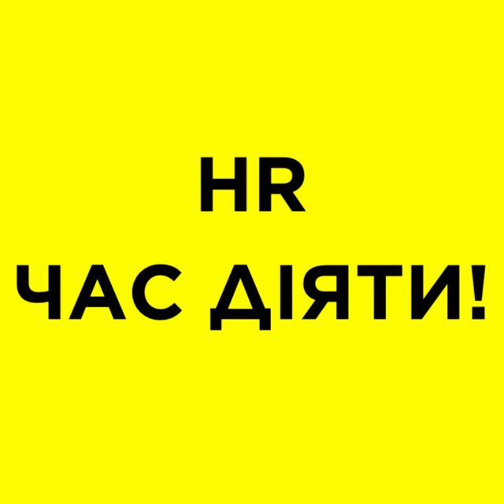
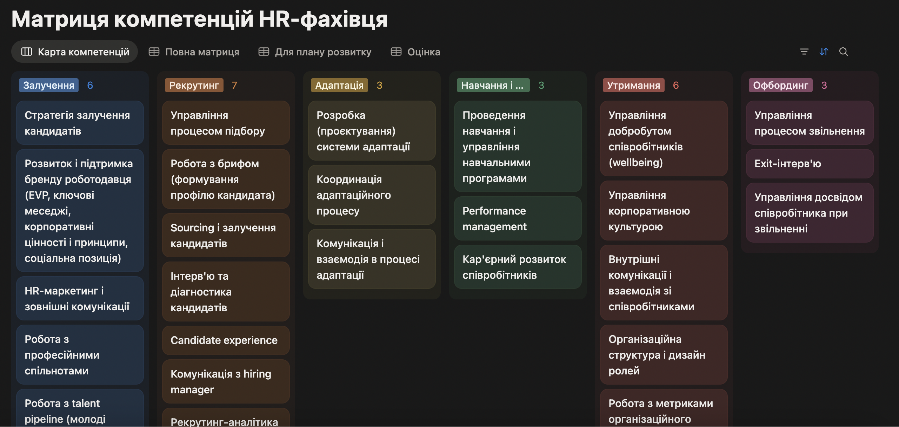
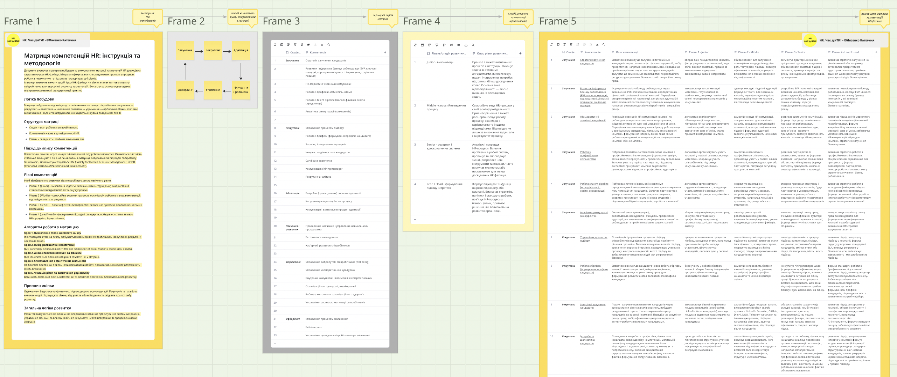
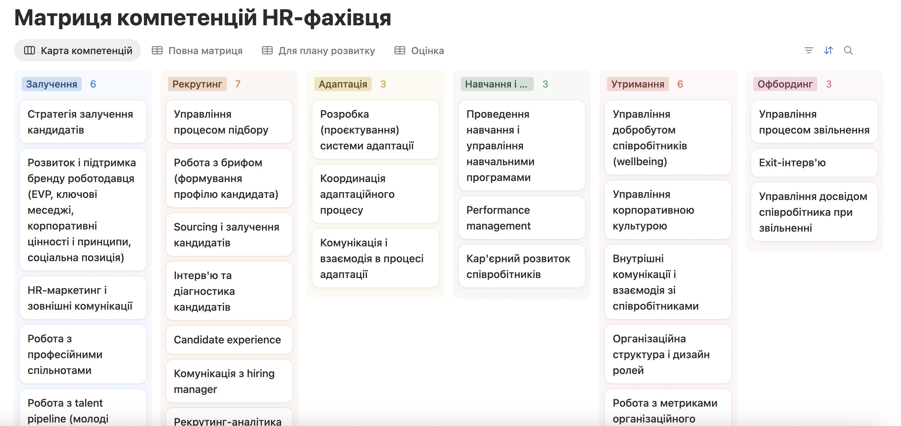

Структурована модель професійних компетенцій
Описує ключові компетенції HR‑фахівця, критерії їх оцінки та очікувану поведінку на різних рівнях зрілості.

Отримати доступ
Матриця компетенцій HR‑фахівця
Отримайте готову систему, яка допомагає швидко побачити сильні сторони, зони росту та наступний професійний рівень HR‑фахівця.
Без хаосу, здогадок і суб’єктивних очікувань.
Описує ключові компетенції HR‑фахівця, критерії їх оцінки та очікувану поведінку на різних рівнях зрілості.
Карта професійного розвитку HR: від базового виконання до стратегічного впливу на бізнес.
Побудована з використанням SHRM Competency Model та CIPD Profession Map.
Компетенції описані відносно життєвого циклу співробітника і стадії розвитку самої компетенції.
Практична цінність
Використовуйте матрицю як робочий інструмент для розвитку HR‑фахівців, побудови ролей, найму, review і розмови з командою та керівниками на основі зрозумілих критеріїв.
Що ви зможете зробити разом із цим інструментом:
Performance review спирається на компетенції, рівні, докази і поведінкові приклади.
Self-assessment показує, де людина зараз і які прояви потрібні для наступного рівня.
План розвитку формується з конкретного gap між поточним і цільовим рівнем.
Очікування до Junior, Middle, Senior і Lead / Head стають прозорими для команди.
Інтерв’ю стає структурованим: зрозуміло, що перевіряти і які питання ставити.
Видно, які компетенції потребують підсилення і де навчання дасть найбільший ефект.
Матриця допомагає побачити зрілість HR‑функції, сильні зони і системні прогалини.
З’являється мова для розмови про роль HR, очікування і внесок у бізнес-результат.
Команда бачить, як перейти від виконання задач до системних рішень і стратегічного впливу.
Для кожної HR‑ролі можна зафіксувати компетенції, рівні і зони відповідальності.
Зворотний зв’язок прив’язується до професійних компетенцій, а не до загальних вражень.
Матриця показує, яких компетенцій бракує для переходу на ширшу зону відповідальності або наступний рівень ролі.
Для кого
Будує систему оцінки HR‑команди, формує грейди, розподіляє зони відповідальності між ролями.
Проводить performance review HR‑фахівців, визначає gap між поточним і очікуваним рівнем.
Веде розвиток HR‑фахівців: визначає зони росту, складає PDP і фіксує прогрес у динаміці.
Проводить self-assessment, розуміє де зараз і що конкретно потрібно для наступного рівня.
Оцінює кандидатів на HR‑ролі за чіткими критеріями, готує структуровані питання для інтерв'ю.
Планує навчання команди на основі gap-аналізу: видно які компетенції потребують підсилення.
Проводить 1:1 і фідбек 360 на основі компетенцій, а не загальних вражень.
Оцінює зрілість HR‑функції, формує прозорі очікування до ролі і рівня HR‑фахівця.
Розуміє що саме потрібно для зростання, бачить різницю між своїм поточним рівнем і наступним.
Проводить HR‑аудит, оцінює зрілість функції і дає клієнту структуровані рекомендації.
Визначає ключових HR‑фахівців, планує наступництво і бачить потенціал для росту в команді.
Спирається на рівні матриці при побудові грейдів і зарплатних діапазонів для HR‑ролей.
Інструкція та методологія
Визначає принципи побудови та використання матриці компетенцій HR для оцінки й розвитку ролі HR‑фахівця.
Перехід від операційного виконання до стратегічного рівня.
Кожен етап має визначені цілі, задачі та інструменти, що задають очікувані поведінкові дії HR.
Компетенції описані через конкретні поведінкові дії у робочих процесах. Підхід відповідає логіці competency frameworks, які використовують SHRM та CIPD.
Виконання задач за інструкціями, стандартні інструменти, потреба у супроводі.
Самостійне ведення процесів, організація роботи, відповідальність за результат.
Аналіз ефективності, виявлення проблем, впровадження змін і покращень.
Формування підходів і стандартів, побудова системи, зв’язок HR‑процесів з бізнес-цілями.
Наповнення і формат
Охоплюють весь спектр роботи HR‑фахівця – від рекрутингу до офбордингу.
Junior, Middle, Senior і Lead / Head – з поведінковими проявами для кожного рівня.
Для кожної стадії – окремий набір компетенцій і поведінкових проявів.
Miro – для огляду системи і презентації.
Notion – для оцінки, review і PDP.
Miro
Зручно показати карту компетенцій команді, обговорити логіку рівнів, методологію і швидко зорієнтуватися в усій структурі матриці.

Notion
Зручно вести performance review, фіксувати рівні, докази, коментарі, плани розвитку і працювати з різними views.

Готово до використання
FAQ
Це один продукт у двох форматах. Miro допомагає побачити систему, Notion допомагає працювати з оцінкою і розвитком.
Доступ надається пожиттєво. Після покупки ви отримуєте посилання на Miro-версію та Notion-шаблон і можете користуватися ними без обмеження в часі.
Після оплати клієнт переходить на сторінку з двома посиланнями або отримує лист з доступом до Miro і Notion.
Матриця підходить для HR Generalist, Recruiter, People Partner, HR Business Partner, HRD, Head of HR, Talent Acquisition Specialist, L&D / Learning Specialist та керівників HR‑напрямів. Оскільки вона розбита за стадіями життєвого циклу співробітника, можна використовувати як всю систему, так і окремі блоки під конкретну роль.
Так. Для рекрутера можна працювати зі стадіями залучення і рекрутингу, для L&D – з навчанням і розвитком, для People Partner або HR Generalist – з ширшим набором стадій. Матриця не вимагає оцінювати всі компетенції одразу.
Так. Рівні побудовані від операційного виконання до стратегічного впливу: Junior працює за інструкціями, Middle веде процеси самостійно, Senior покращує систему, Lead / Head формує підходи, стандарти і зв’язок HR‑процесів з бізнес-цілями.
Так. У Notion можна змінювати назви компетенцій, рівні, views, поля оцінки і формулювання плану розвитку.
Так. У Notion-версії можна фіксувати поточний рівень, цільовий рівень, цифрову оцінку, силу доказів, поведінкові приклади, коментарі та план розвитку.
Так. Можна обрати одну роль, кілька ключових компетенцій і провести self-assessment. Після цього матриця допоможе побачити розрив між поточним і цільовим рівнем та сформувати перший план розвитку.
Так. Матриця допомагає сформувати профіль ролі, підготувати питання для інтерв’ю, оцінити досвід кандидата і зрозуміти, який рівень компетенцій він реально демонструє.
Ні. Структура вже підготовлена. У Miro можна переглядати карту і методологію, а в Notion працювати з готовими views. Достатньо базового вміння відкривати посилання, дублювати шаблон і заповнювати таблицю.
Так. Матрицю можна використовувати як для всієї HR‑команди, так і для однієї ролі чи окремого напряму. Ви можете працювати лише з тими компетенціями і стадіями, які зараз актуальні для вашої задачі.
Це взаємодоповнюючі формати. Miro – для огляду всієї системи: показати логіку команді або керівнику, пояснити рівні і структуру. Notion – для щоденної роботи: вести review, фіксувати рівні, докази і плани розвитку. Більшість використовують обидва разом: спочатку Miro, щоб зрозуміти систему, далі Notion для роботи.
Так. Якщо вам необхідні документи – напишіть нам, і ми узгодимо всі деталі.
Отримати доступ
1990 ₴
790 ₴
🔥 Акційна пропозиція
Доступ до Miro і Notion – одразу після покупки.